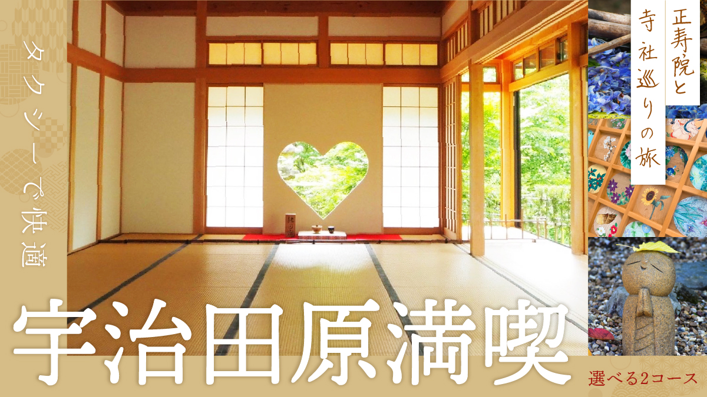
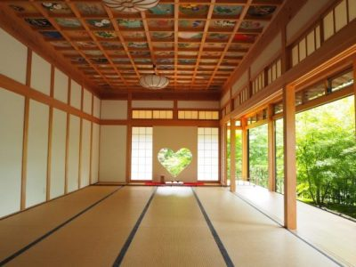
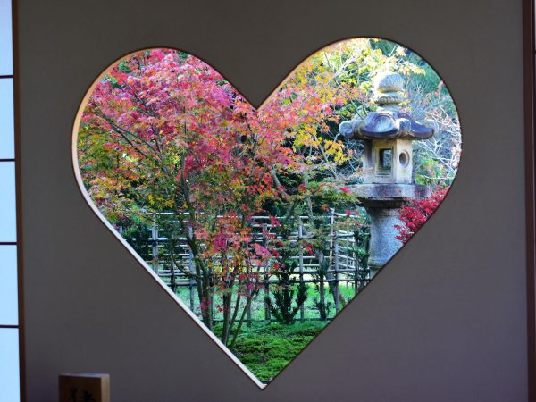
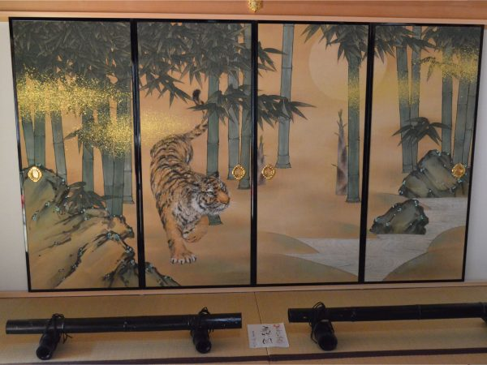
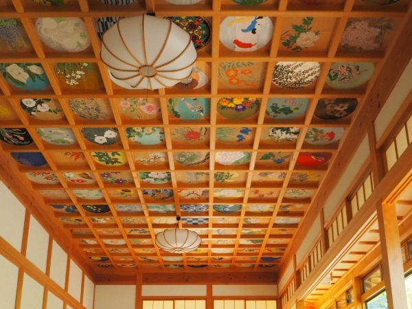
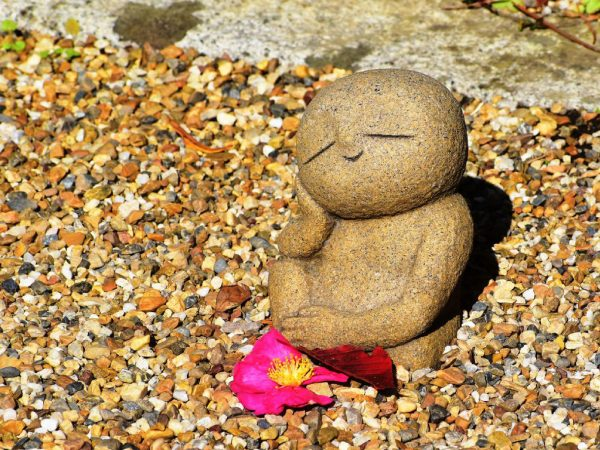
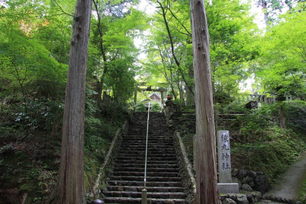

最新の情報は 公式サイトのツアーページ をご覧ください。
タクシーで快適♪宇治田原を満喫！正寿院と寺社巡りの旅

| コース名 | 旅行代金（1名様） |
| シンプルコース | 6,800円 |
| 満喫コース | 8,800円 |
※大人・小人同額となります。
※1名様からご予約いただけますが4名様以上で運行します。
※旅行代金には拝観料が含まれております。
※拝観時はドライバーは同行いたしません。
風鈴まつりメインのツアーはこちら→正寿院 風鈴まつり送迎プラン 2026【京都駅・宇治駅発着】(6/1～9/30)
| お申込み状況(最少催行人数4名) | |||||||
| 満喫 | |||||||
| シンプル | |||||||
※最新のお申込み状況はお問い合わせください
※上記以外の出発予定日もお申込みいただけます
ハートの猪目窓やカラフルな天井画が有名な正寿院へいつでもお気軽にお出かけできるコースを2種類ご用意いたしました！
創建800年以上の歴史がありながら、SNS映え抜群の正寿院。
猪目窓は名前の通りイノシシの目に似た形から名づけられており、災いを除いて福を招く意味合いがあるそうです。
天井いっぱいの日本画は花や風景をテーマに描かれたもので、寝転がって見上げることができます！
【満喫コース】
宇治田原の歴史や名所を巡りたい方にはこちら！
フォトジェニックな「正寿院」、自由昼食が楽しめる「宗円交遊庵 やんたん」、そして、歴史とご利益あふれる「猿丸神社」と「禅定寺」を巡る充実コース！
「宗円交遊庵 やんたん」では、煎茶セットや玉露セットなどのお飲み物に加え、茶汁・茶そば・抹茶ソフトなど様々な形でお茶をお楽しみいただけます。
【シンプルコース】
時間が限られている方や、正寿院の拝観に集中したい方におすすめ。
正寿院＆宇治茶の魅力をギュッと詰め込んだコース！
参拝のあとは、宇治田原ならではのお茶の魅力を体感できるスポット「お茶の郷 木谷山」へ立ち寄ります。
日本茶発祥の地・宇治田原ならではの本格宇治茶を使用したスイーツ、茶葉や、茶葉を使った菓子類など、こだわり商品の販売があります。

満喫コース
乗降場所は【京阪宇治駅】【JR宇治駅】をご選択いただけます。
| 時間 | 場所 |
| 9:30 | 京阪宇治駅（集合・出発） |
| 9:40 | JR宇治駅（集合・出発） |
| 10:20 | 正寿院 |
| 11:30 | 宗円交遊庵 やんたん |
| 12:40 | 猿丸神社 |
| 13:15 | 禅定寺 |
| 13:50 | JR宇治駅（解散） |
| 14:00 | 京阪宇治駅（解散） |
シンプルコース
乗降場所は【京阪宇治駅】【JR宇治駅】をご選択いただけます。
| 時間 | 場所 |
| 9:00 | 京阪宇治駅（集合・出発） |
| 9:10 | JR宇治駅（集合・出発） |
| 9:50 | 正寿院 |
| 11:00 | お茶の郷 木谷山 |
| 11:50 | JR宇治駅（解散） |
| 12:00 | 京阪宇治駅（解散） |
※拝観時はドライバーは同行いたしません。
※渋滞等で、行程の入替や、予定通りの滞在時間をお取りすることができない場合がございます。予めご了承ください。
★京阪宇治駅・JR宇治駅発着なので、解散後もそのまま観光を楽しむ方も多いですよ♪（おすすめスポットはこちら）
正寿院
可愛いハートの「猪目窓」や160枚の「天井画」と記念撮影をするのもおすすめ！




猿丸神社
“こぶ取りの神””癌封じの神”と篤く信仰されています


写真提供／お茶の京都DMO
禅定寺
十一面観音立像や日光・月光菩薩立像など多くの文化財があります。


写真提供／お茶の京都DMO
宗円交遊庵 やんたん

写真提供／お茶の京都DMO
MKメディアで各スポット＆宇治のおすすめポイント紹介中
-

観る・買う・食べる！京都・宇治観光のおすすめスポット

鮮やかな新緑の絶景！京都の「青もみじ」おすすめスポット20選
-

京都の「彼岸花」おすすめスポット18選！初秋の田畑を真っ赤に染め上げる
-

【2024年最新版】混雑しない京都の紅葉穴場スポットおすすめ40選
お待ち合わせ場所

＜参考＞正寿院 ホームページ
【MKトラベルLINE公式アカウント】
MKトラベルの新規ツアー情報をLINEでお届けいたします

【各SNSでも京都の情報やツアー情報をお届けしています】


旅行条件
| ツアー番号 | S003 |
| 出発地 | 宇治市 |
| 添乗員／ガイド | なし（乗務員がその業務を代行いたします）／なし |
| 食事 | なし（満喫コースのみ自由昼食あり） |
| 最少催行人数 | 4名 |
お申込みについてのご注意
※最少催行人数は4名様です。最少催行人員に満たない場合は、旅行の実施を取りやめることがあります。出発の3日前にその旨をご連絡し、お客様から当社がお預かりしている旅行費用の全額をお返しいたします。
※旅行条件・旅行代金は、2025年2月1日現在を基準としています。
※行程および帰着時間は交通事情などにより変更になる場合があります。
※お申込みの前に弊社の募集型企画旅行規約をご確認ください。
よくある質問
Q.1名ですが、申し込みできますか？
A.はい。お一人参加の方もたくさんいらっしゃいますので、お気軽にお申し込みください。
Q.参加したかったけど、日程が合いません
A.貸切で再現できる場合もございますのでご相談ください。お問合せフォームはこちら
Q. 正寿院での滞在時間はどのくらいですか？御朱印をいただく時間はありますか？
A.正寿院での滞在時間は約60分です。ご朱印をお求めの場合も、滞在時間内にお受け取りいただける見込みです。
Q. 境内ではたくさん歩きますか？
A.境内はそれほど広くないため、長い距離を歩くことはありません。ゆっくりと境内をお楽しみいただけます。
＜お問合せフォームはこちら▶＞
＜MKトラベルTOPはこちら▶＞
＜おすすめツアー一覧はこちら▶＞
・クレジットカード決済
（コンビニ決済をご希望のお客様はお電話にてご予約お願いいたします）
お支払方法詳細はこちら
お客様のご都合でご予約をキャンセルされる場合は、すみやかに下記お問合せ先までご連絡ください。
キャンセル料
11日目に当たる日以前
無料
10日目に当たる日以降
20%
7日目に当たる日以降
30%
旅行開始日の前日
40%
旅行開始日の当日
50%
旅行開始後又は無連絡
100%